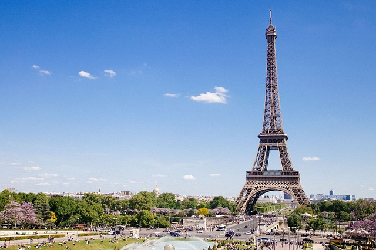
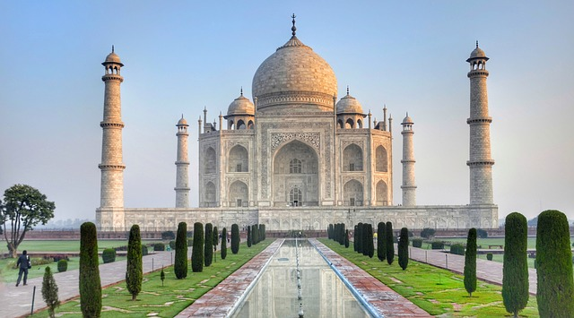

Les petites histoires des grands monuments
Les monuments du monde sont des symboles de réussite international pour tous les pays. De ce fait, nous vous proposons d’apprendre l’histoire de chacun d’eux et de connaître l’intérêt de ces grands monuments qui symbolisent pour ces pays une grande richesse historique et culturel. Tels que La Statue de La Liberté à New-York, au Etats-Unis.

